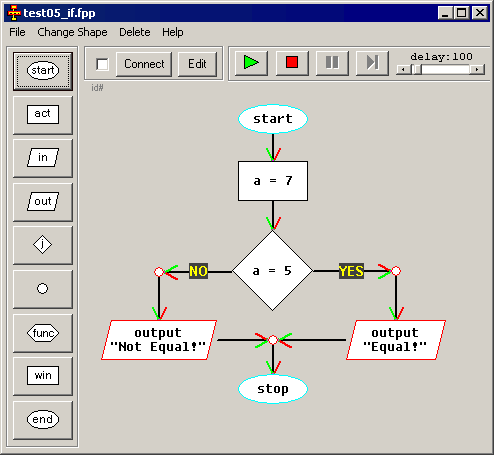

Overview
Data-Flow Visual Programming Language allows
to run basic algorithms in a visual way. All you
have to do is to place program blocks on screen,
connect them with lines (arrows) and run. You
can also run it in step by step mode (when
delay is set to maximum).
Select "Examples" from "File" menu, and use green arrow button
to run them.

< < < Back To Index